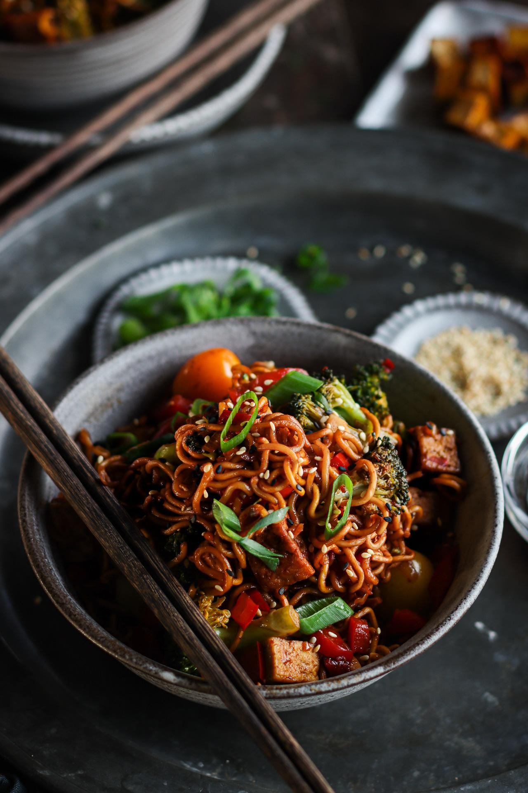
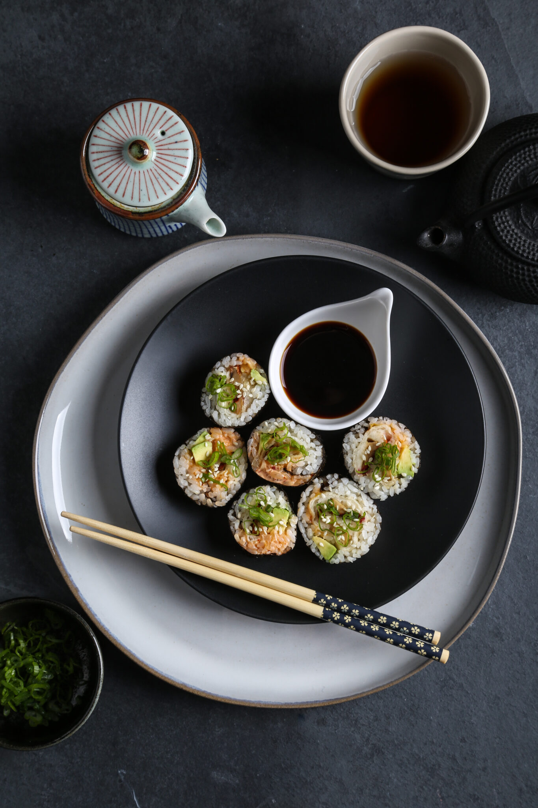
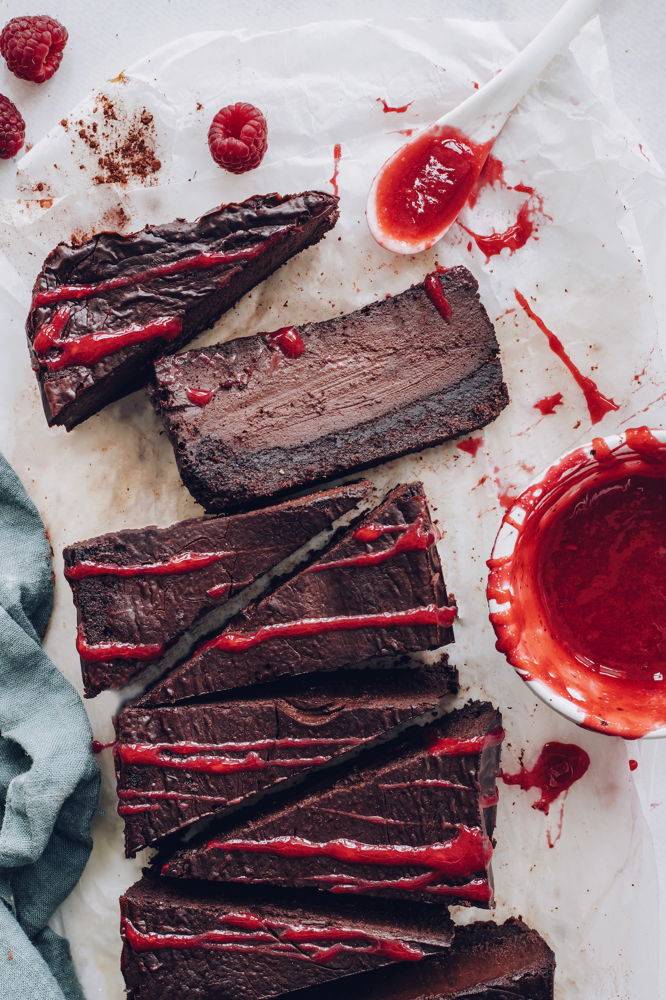

RECIPES

SPICY GARLIC WOK NOODLES
This is a new and improved update on our favourite spicy garlic wok noodles! It's loaded with veggies, and is an ultra-flexible recipe. Change up the veggies based on what you have in the fridge - green beans, cabbage, carrots, mushrooms, or bean sprouts - they all work great!
Recipe by Pick Up Limes

LOBSTER MUSHROOM TEMPURA, AVOCADO AND KIMCHI+MAYO SUSHI ROLLS
These meaty mushrooms are encased in a crispy tempura shell and paired with rich avocado and creamy+spicy kimchi mayo. It’s the perfect little bite!
Recipe by Olives For Dinner

EASY BAKED CHOCOLATE CHEESECAKE
A perfectly tender chocolate cookie crust is topped with a rich, creamy, not-too-sweet chocolate cheesecake layer and fresh raspberry sauce. Swoon! Simple methods and just 9 ingredients required to make this show-stopping gluten-free and vegan dessert.
Recipe by Minimalist Baker